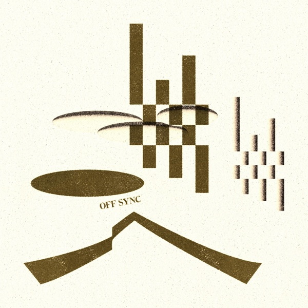

Bookingブッキング
Takahiro Izumikawa
A pianist and keyboardist, born in Japan and based in New York. 日本に生まれ、ニューヨークを拠点に活動するピアニスト／キーボーディスト。
Off Sync (2024) — recorded with Chris Dave on drums throughout the album — was built on a single idea: to make a work of literature out of music. The live show is where the album's conversation continues.
全曲をドラムのChris Daveと制作した、音楽で文学作品を作るというコンセプトの『Off Sync』(2024)。そのライブのご相談のためのページです。
Liveライブ
あ (A) — live at Nublu, New Yorkあ (A) — ニューヨーク・Nublu でのライブ
Listen音源
The Recordアルバム

Into the style he built on the bandstand, Takahiro brings the history of Japan. That long history holds a deep spirituality and ideas, melodies all its own, and rhythms and dances strikingly close to the folk music of Africa. Off Sync (2024) was released on his own label, access art studio.
実際の音楽シーン、現場で作り上げたスタイルに彼が持ち込むのが、日本の歴史だ。日本の長い歴史には、深い精神性やコンセプト、特有のメロディ、そしてアフリカの民族音楽によく似た独自のビートや踊りがある。『Off Sync』(2024) は自社レーベル access art studio からのリリース。
The Bandバンド
On the record: Chris Dave — drums throughout the album.アルバムでは Chris Dave が全曲でドラムを演奏。
On stage, Off Sync takes three forms: solo piano, trio, or full band. Most recent full-band show: Cotton Club, Tokyo — June 2026.ライブは、ピアノソロ／トリオ／フルバンドの3つの編成。直近のフルバンド公演: Cotton Club（東京）— 2026年6月。
The Venue-Only Vinyl会場限定レコード
A 12-inch pressing of Off Sync — 100 copies, venue-only. Takahiro brings the records to the show. They are never sold online and can only be found the night of the show — something for the room that exists nowhere else.
アルバム "Off Sync" に記録された音楽の会話は今も続いている。会場限定100枚のOff Syncレコードが完成しました。レコードは本人が会場へ持参します。オンラインには存在せず、公演の夜、その会場でだけ出会えます。
Selected Stages主な出演
- Upcoming — Joe's Pub, New York · September 29, 2026
- Jazz Re:freshed, London
- Cotton Club, Tokyo
- Little Island, NYC
- and moreほか
Aboutプロフィール
Takahiro's music begins with the foundation of bebop — playing and recording with Vincent Herring, Cyrus Chestnut, Russell Malone, Carl Allen, and Eric Alexander. Years of gospel in New York's churches followed, and a meeting with Maurice Brown opened the door to the hip-hop world: stages with Talib Kweli, Smif-N-Wessun, Black Moon, and Kool Keith, and ensemble playing beside Anderson .Paak, Chris Dave, Keyon Harrold, Isaiah Sharkey, Jermaine Holmes, and MonoNeon. He is an Ableton, Sequential, and Hammond artist.
彼の音楽は、ビバップジャズからはじまる。Vincent Herring、Cyrus Chestnut、Russell Malone、Carl Allen、Eric Alexanderなどとの共演やレコーディングでジャズの歴史やスタイルを吸収する。その後、NYの教会での数年のゴスペル演奏を経て、Maurice Brownとの出会いをきっかけにヒップホップの世界に入っていく。Talib Kweli、Smif-N-Wessun、Black Moon、Kool Keithなど90年代を牽引するラッパーとの共演でグルーブや文脈を学び、Anderson .Paak、Keyon Harrold、Isaiah Sharkey、Jermaine Holmes、MonoNeonなどのD'AngeloやErykah Baduの世界のプレイヤーたちとの演奏でジャズやモダンなスタイルとの融合、アンサンブルを学ぶ。彼は Ableton／Sequential／Hammond の公式アーティストでもある。
{kind=link}
{kind=link}
photo · Alaya Lee
What's Next — YATARA次の実験 — YATARA
If a jazz pianist lived in 1600s Japan. Takahiro is researching a new genre — YATARA — that replaces the African rhythms at the deepest foundation of New York's music with the rhythms of 1600s Japan, using the clave as a shared key. It is already on stage: the band premiered the first YATARA piece at Cotton Club, Tokyo in June 2026, with the audience singing one part and clapping another. The experiment continues on stage — with room in the calendar for venues that want to host it.
If a jazz pianist lived in 1600s Japan. NYの音楽スタイルの最も土台になっているアフリカのリズムを、クラーベを基準に日本の1600年代のリズムに置き換えて演奏する新しいジャンル『YATARA』を研究し、ライブで少しずつ形にし始めている。2026年6月、Cotton Club（東京）でバンド初演奏。客席が歌うパートと手拍子のパートも一緒に演奏した。実験はライブで続いていく — その場となる会場を探している。